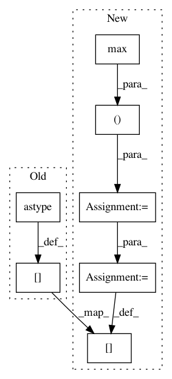

bfedf23495862daaa4dceecfc8dd5d579ecb5efd,ilastik/applets/thresholdTwoLevels/opThresholdTwoLevels.py,OpSelectLabels,execute,#OpSelectLabels#Any#Any#Any#Any#,126
Before Change
result[:] = all_label_values[ bigLabels ]
"""
result[:] = (prod>0).astype(numpy.uint8)
logMemoryIncrease("Just before return")
return result
After Change
logMemoryIncrease("After taking product")
del prod
all_label_values = numpy.zeros( (bigLabels.max()+1,), dtype=numpy.uint8 )
for i, l in enumerate(passed):
all_label_values[l] = i+1
all_label_values[0] = 0
result[:] = all_label_values[ bigLabels ]
logMemoryIncrease("Just before return")
return result
In pattern: SUPERPATTERN
Frequency: 3
Non-data size: 7
Instances
Project Name: ilastik/ilastik
Commit Name: bfedf23495862daaa4dceecfc8dd5d579ecb5efd
Time: 2013-04-08
Author: anna.kreshuk@iwr.uni-heidelberg.de
File Name: ilastik/applets/thresholdTwoLevels/opThresholdTwoLevels.py
Class Name: OpSelectLabels
Method Name: execute
Project Name: Esri/raster-functions
Commit Name: 0873b10d3058c2da26a57d23caed70cbacaac699
Time: 2014-10-30
Author: akferoz@esri.com
File Name: functions/FocalStatistics.py
Class Name: FocalStatistics
Method Name: updatePixels
Project Name: Esri/raster-functions
Commit Name: 490e5785e68a143271beb4197f8fe6be75ff1b05
Time: 2014-10-30
Author: akferoz@esri.com
File Name: functions/FocalStatistics.py
Class Name: FocalStatistics
Method Name: updatePixels